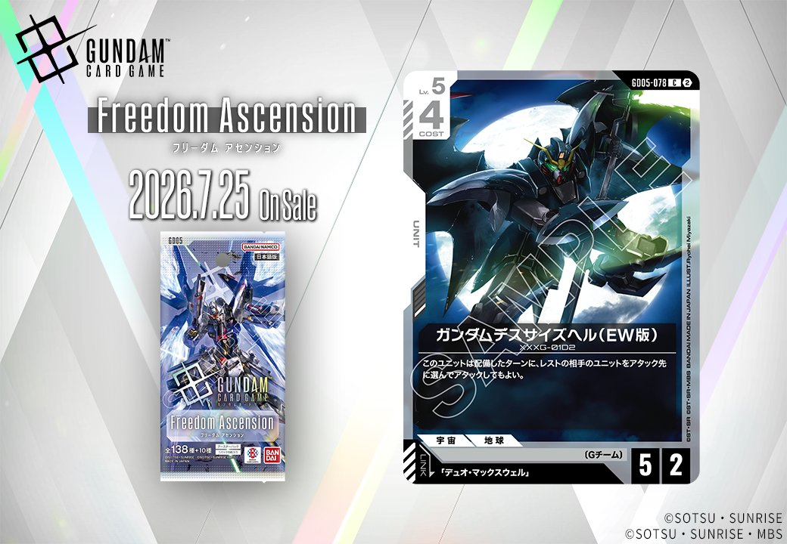
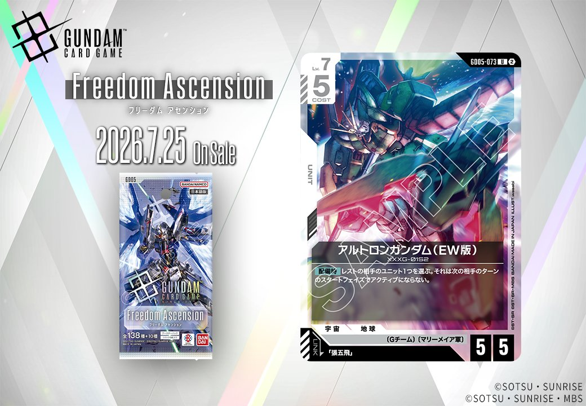
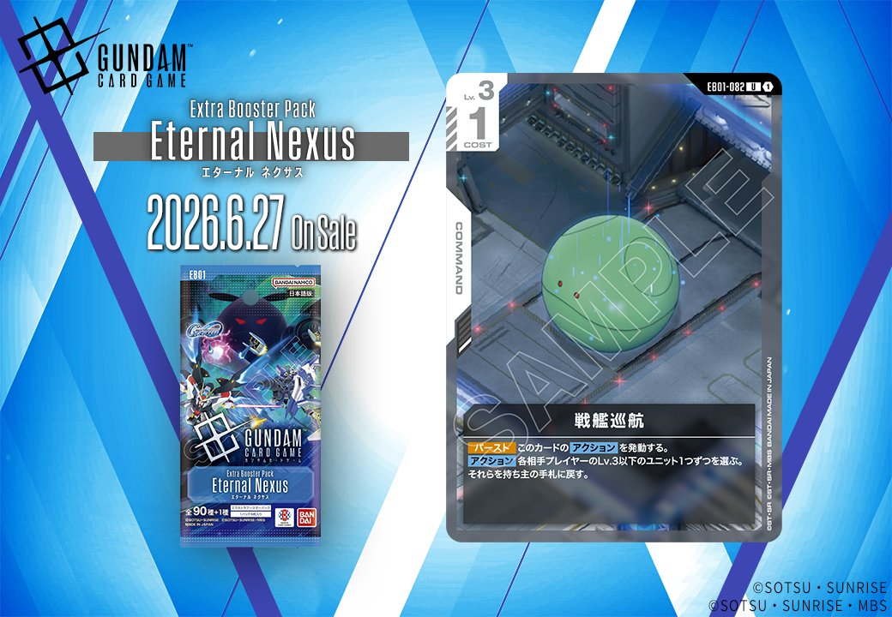
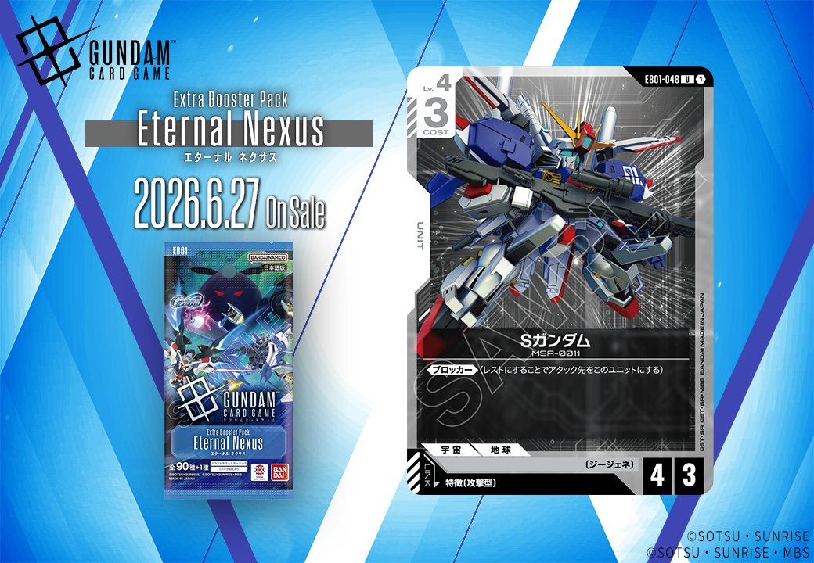

今回は、2026年6月27日発売のEB01「Eternal Nexus(エターナル ネクサス)」から2枚、2026年7月25日発売のGD05から1枚とFreedom Ascensionから1枚、計4枚の新カードをご紹介します。白のUNIT3枚と緑のCOMMAND1枚という構成で、特にEW版の機体やリンク条件が特徴的なカードが揃いました。

ガンダムデスサイズヘル(EW版) (GD05-078)
| 色 | 白 | タイプ | UNIT |
| Lv | 5 | コスト | 4 |
| AP | 5 | HP | 2 |
| 特徴 | 〔Gチーム〕 | ||
| リンク条件 | 「デュオ・マックスウェル」 | ||
効果: このユニットは配備したターンに、レストの相手のユニットをアタック先に選んでアタックしてもよい。
ガンダムデスサイズヘル(EW版)は、配備したターンにレストの相手ユニットをアタック先に選べる能力を持つLv.5ユニット。AP5/HP2とやや打たれ弱いが、相手のレストユニットを即座に排除できる点は強力で、同日公開のウイングガンダムゼロ(EW版)の【アタック時】効果で相手をレストにしてから、このカードで追撃する連携が可能。 デュオ・マックスウェルとのリンクが設定されており、〔Gチーム〕特徴を活かした白色デッキでの採用が期待される。



アルトロンガンダム (EW版) (G005-073)
| 色 | 白 | タイプ | UNIT |
| Lv | 7 | コスト | 5 |
| AP | 5 | HP | 5 |
| 特徴 | 〔Gチーム〕、〔マリーメイア軍〕 | ||
| リンク条件 | 「張五飛」 | ||
効果: 【配備時】レストの相手のユニット1つを選ぶ。それは次の相手のターンのスタートフェイズでアクティブにならない。
アルトロンガンダム(EW版)はCOST5でAP5/HP5の標準的なステータスを持つLv.7ユニット。【配備時】にレスト状態の相手ユニット1つを次の相手ターンのスタートフェイズでアクティブにならなくする効果は、相手の重要ユニットの行動を1ターン完全に封じることができる強力な妨害能力。 リンク対象の「張五飛」と組み合わせることで〔Gチーム〕シナジーを活かした展開が期待でき、同じ〔Gチーム〕特徴を持つウイングガンダムゼロ(EW版)のレスト効果と合わせて相手の盤面をコントロールする戦術が可能。


戦艦巡航 (EB01-082)
| 色 | 緑 | タイプ | COMMAND |
| Lv | 3 | コスト | 1 |
効果: 【バースト】このカードのアクションを発動する。「アクション 各相手プレイヤーのLv.3以下のユニット1つずつを選ぶ。それらを持ち主の手札に戻す。」
戦艦巡航は、バースト効果で各相手プレイヤーのLv.3以下のユニットを手札に戻すコマンドカード。多人数戦では複数の相手に対して同時にテンポロスを強いることができ、緊急時の防御手段として機能する。 コスト1という軽さで発動できるため、序盤から中盤にかけて相手の展開を妨害しつつ、自分のペースを作りやすい緑色のコントロール向けカードと言える。

Sガンダム (EB01-048)
| 色 | 白 | タイプ | UNIT |
| Lv | 4 | コスト | 3 |
| AP | 4 | HP | 3 |
| 特徴 | 〔ジージェネ〕 | ||
| リンク条件 | 特徴に攻撃型を持つPILOT | ||
効果: 《ブロッカー》(レストにすることでアタック先をこのユニットにする)
Sガンダム (EB01-048)は、コスト3で《ブロッカー》を持つ白の防御型ユニット。AP4/HP3という標準的なステータスで、特徴に攻撃型を持つパイロットとのリンクが可能だが、ジージェネ特徴は現環境で相性の良いカードが限定的。 同じく《ブロッカー》を持つガンダム・ルブリス(採用率37.4%)やエールストライクガンダム(採用率35.8%)と比較すると、エールストライクはリンク時にHP4以下のユニットをバウンスする追加効果を持つため、純粋な《ブロッカー》のみのこのカードは採用優先度で劣る可能性が高い。


関連カード
-
 ヒイロ・ユイ(G005-098)NEW白系 — 同色・共通特徴: Gチーム（新カード）
ヒイロ・ユイ(G005-098)NEW白系 — 同色・共通特徴: Gチーム（新カード） -
 ウイングガンダムゼロ(EW版)(G005-067)NEW白系 — 同色・共通特徴: Gチーム（新カード）
ウイングガンダムゼロ(EW版)(G005-067)NEW白系 — 同色・共通特徴: Gチーム（新カード） -
 溢れる慈愛(GD01-118)白系デッキ内採用率39.6% (1269デッキ)
溢れる慈愛(GD01-118)白系デッキ内採用率39.6% (1269デッキ) -
 ガンダム・ルブリス(GD01-086)白系デッキ内採用率37.4% (1196デッキ)
ガンダム・ルブリス(GD01-086)白系デッキ内採用率37.4% (1196デッキ) -
 エールストライクガンダム(ST04-001)白系デッキ内採用率35.8% (1145デッキ)
エールストライクガンダム(ST04-001)白系デッキ内採用率35.8% (1145デッキ) -
 デュオ・マックスウェル(GD01-090)緑系デッキ内採用率1.7% (55デッキ)
デュオ・マックスウェル(GD01-090)緑系デッキ内採用率1.7% (55デッキ) -
デュオ・マックスウェル(GD01-090_p1)緑系デッキ内採用率0% (0デッキ)
-
デュオ・マックスウェル(GD01-090_p2)緑系デッキ内採用率0% (0デッキ)
-
デュオ・マックスウェル(GD01-090_p3)緑系デッキ内採用率0% (0デッキ)
-
ガンダムデスサイズヘル(EW版)(GD05-078)NEW白系 — 同色・共通特徴: Gチーム（新カード）